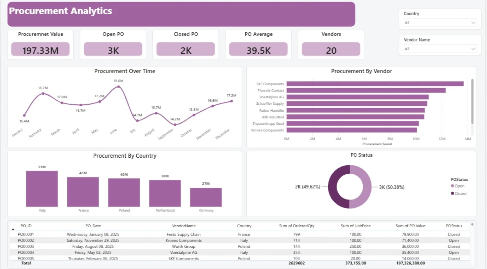

What the analysis set out to answer
Explore how commercial demand, procurement spending, inventory positions, and logistics outcomes relate across the business.
Connecting sales, procurement, inventory, warehousing, and logistics to provide a unified view of operational performance.
Explore how commercial demand, procurement spending, inventory positions, and logistics outcomes relate across the business.
Built a multi-page analytical view spanning executive performance, sales, procurement, inventory, and warehouse logistics.
Provides a starting point for investigating delivery performance, stock distribution, and the alignment of purchasing activity with sales demand.





Portfolio analysis based on supplied dashboard screenshots. Figures are descriptive, not verified business improvements. Dataset provenance, metric definitions, technical implementation, and commercial permissions should be confirmed before making stronger claims.